Solving complex product problems through research, collaboration, and design.
I'm a product designer specializing in complex B2B SaaS products used to manage intricate workflows, business rules, and technical constraints. Great products emerge when cross-functional teams build a shared understanding of the problem they're trying to solve. I help bring together user needs, business goals, and technical realities to create solutions that work for customers and the business alike.
Experience Solving Complex Problems In
- Fintech
- Cybersecurity
- Business Management
- Project & Program Management
What People Say About Working With Me
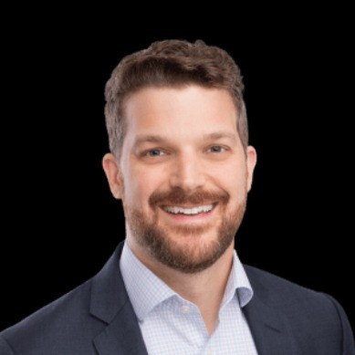
Rusty is an accomplished designer who focuses on both promoting the needs of the user and the practicalities of balancing business needs, to deliver the best features for all users. Rusty optimized our design review process, led the design process for highly visible, revenue generating features, and was simply a joy to work with while at CardFlight (SwipeSimple). Rusty immediately upgrades any team or organization he is a part of and I'd take any opportunity to work with him again.

Rusty was a fantastic manager guiding our team and fostering a positive culture that motivated us to excel.
Our team design reviews were largely so effective due to Rusty's ability to quickly understand designs, user needs and bring clarity and sound advice. Additionally, gently guiding constructive design feedback and refocusing team members when required.
Rusty's management style struck an ideal balance between autonomy and active involvement, making every team member feel valued and understood. He had a unique talent for empowering us, recognizing our individual passions, and addressing our needs effectively.
Rusty is an excellent Product Design lead and Team Leader. Rusty took me on as a Junior Designer and quickly enabled my journey and development as a designer. He enabled me in every way that he could and helped me to learn the skills required to become a better designer. Rusty helped to guide our team from a very small team of 3 when I joined the company nearly 3 years ago to a team of 6. He helped us transition from XD to Figma and to develop our design system and team to a much higher level of design maturity. Any company would be lucky to have Rusty leading their design teams or departments.
Rusty is a "full service" UX leader. He not only manages his team in a positive and encouraging manner, Rusty also supports upward with a considered, expert knowledge of UX. A great mentor and guide for those new to the UX space as well as the more seasoned of the team. Rusty is unduly modest about himself while forthright about the capabilities of his team. A great manager and UX leader, Rusty is an asset to any org.
Rusty's superpower is the way he combines his design experience, empathy, and professionalism to help bridge gaps in culture, communication, and process helping different disciplines work together to advance the goals of UX. He does this while serving the individual needs of the members of his team and running interference to allow them to focus on what they do best.
Rusty's ability to quickly draw on his product and design knowledge make him skilled at re-centering conversations around root cause and user needs. He knows how to unite a team by putting people first, leading with humility, and allowing himself to be vulnerable. Any organization serious about UX as a practice and the development of its people should seriously consider adding Rusty to their team. He will be missed on ours.
It was very easy to work with Rusty, with the help of his positivity and easy style, every meeting with him seemed more like a friendly discussion than a report. As a leader, he allowed the team members to develop independently in their own work, but at the same time, he constantly supported and united them along common goals. He created a friendly, relaxed atmosphere, and he was always ready to help in any situation, whether it was a human or professional problem. Rusty understood the strengths and weaknesses of each team member and tried to get the most out of them by helping and supporting everyone where they needed it the most.
He was able to understand problems very quickly and find the simplest and most obvious solution for them. You could also learn a lot from his knowledge in UX research. He always knew what goals could be achieved with the help of the given resources and time frame.
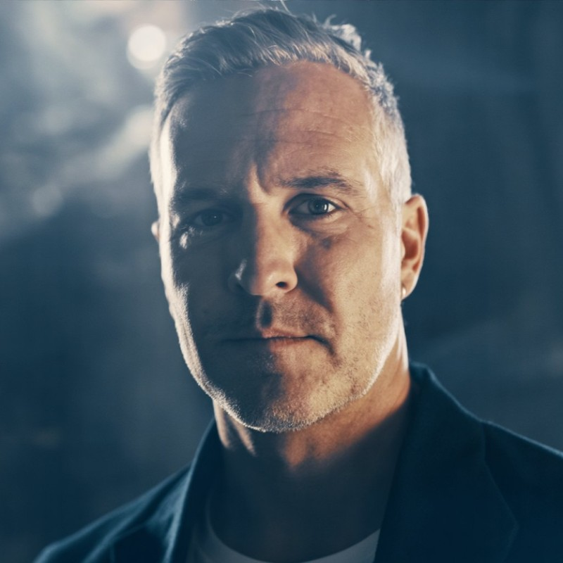
Rusty is the kind of designer that asks the hard questions that no one else can. He's the master of the product vision "gut check" – the kind of deep dive that can unravel weak design decisions. But he isn't fierce about it. He is genuine. All his devotion comes from a deeply-ingrained drive to arrive at genuinely great solutions. When you work along side him you can see it.
His superpower is in "cutting through the fluff". He has a "let's get to work" attitude that is contagious. If you need someone who can make a bulletproof presentation to your executive team, to convince them to invest in the UX process, he's your man. He thrives at communicating the value of UX with everyone around him, and in using research and interview data to prove the reasons for his solutions.
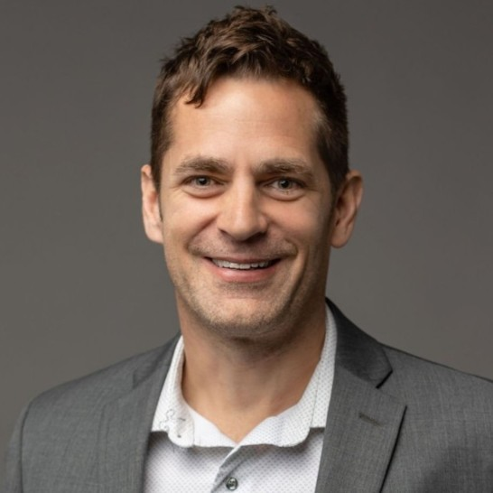
As a product manager I thoroughly enjoyed working with a professional like Rusty. Rusty displayed a broad set of skills during our time working together. From user research to persona and user journey developing to prototyping (and many things in between) there really wasn't anything we threw at Rusty that he was fully capable of handling.
I was nominated by my peers and chosen from about 5000 other employees to win this award. I was recognized for living the value "Communicate Openly, Honestly, and Constructively."

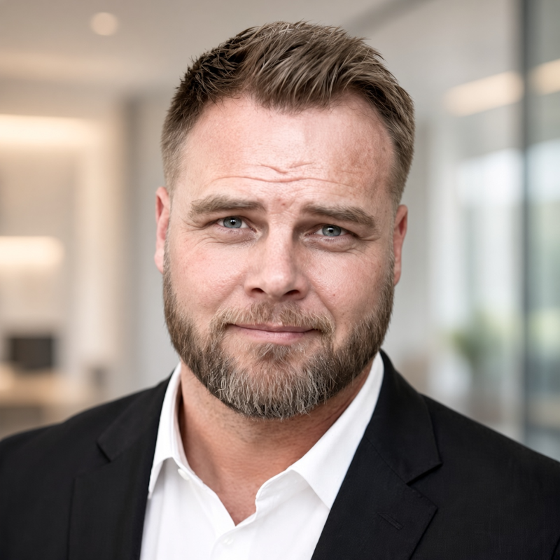
Rusty was the complete package for our company. He led the UX design team within our company, championed the user research efforts (including the pioneering of a sourcing and scheduling system for user interviews), designed interactions and user experiences, created high-fidelity mockups and conducted usability sessions with end users.
He brought with him experience, passion, and maturity. He was critical to establishing and implementing our product design and development process and was a leader among his peers. Rusty was highly respected in his craft and universally appreciated as a teammate across our company. I'd work with him again in a heartbeat.
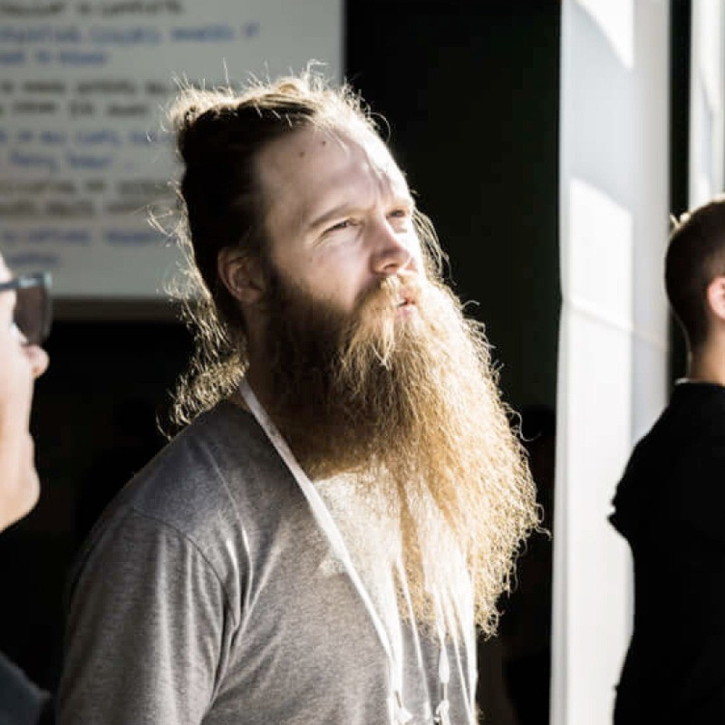
Rusty had a significant impact on my career, and I was fortunate to work with him when I was first starting as a UX Designer. There's a level of calmness, clarity, and humility that he has when facilitating that I continue to try and model in my work. He could get the information out of peoples' heads and put it into a format that allowed the conversation to continue to evolve. Whoever gets the opportunity to work with Rusty will be better for having done so.
Rusty is the complete UX package, as far as I'm concerned. He's smart and committed to solving problems and building delightful user experiences. He excels at working with developers and iterating on designs until the right solution is reached. His process is the best I've seen and I'm confident that he can improve any product he works on.
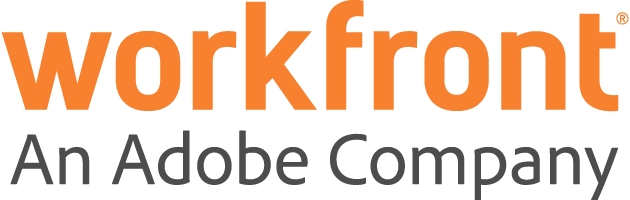
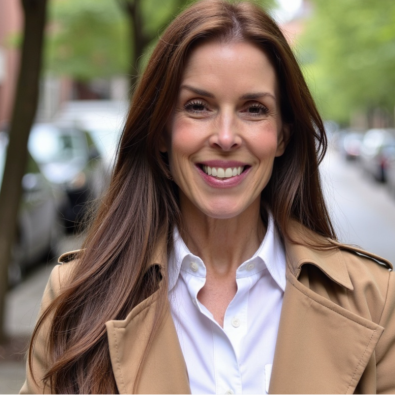
Rusty is a great guy to work with. He is direct in his communication and can figure out complex problems. I always enjoy listening in on his usability tests because he is great at making everyone feel comfortable, both the anxious developer watching and the lucky customer who volunteered to be the guinea pig in the test.
My favorite attribute of Rusty's is the way he works with product managers. He listens to everyone's point of view, but he also calls out when the recommendation is going to break the user experience and he then takes time to figure out a better solution that will solve the problem. He does it in a way that gets everyone on the same page. Rusty is a UX unicorn, and a pretty darn good one, too.
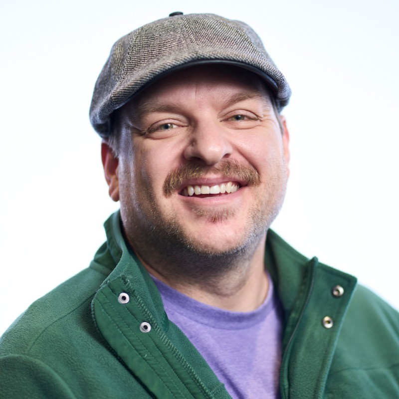
Rusty is an incredibly talented designer and has been a great manager for me. He always provided constructive feedback and never tried to make decisions for me on my designs and proposed solutions. Rusty has a great mind for design thinking and is very good at describing the user experience challenges and clearly defining the goals and outputs needed on any project. He is also very skilled at engaging with product managers, development and QA teams and encouraging focus on the best solutions. I would gladly work for Rusty again!
I had the pleasure of working with Rusty at Workfront where he was my manager. Rusty is a very thoughtful and thorough designer. He has a strong sense of product strategy and direction that was seen in his consistent and meaningful improvements to the product.
As Rusty's direct report, he regularly provided me with useful feedback and worked hard to help me improve as a designer. Rusty is a great designer, manager, and coworker, and I would not hesitate to work with him in the future.
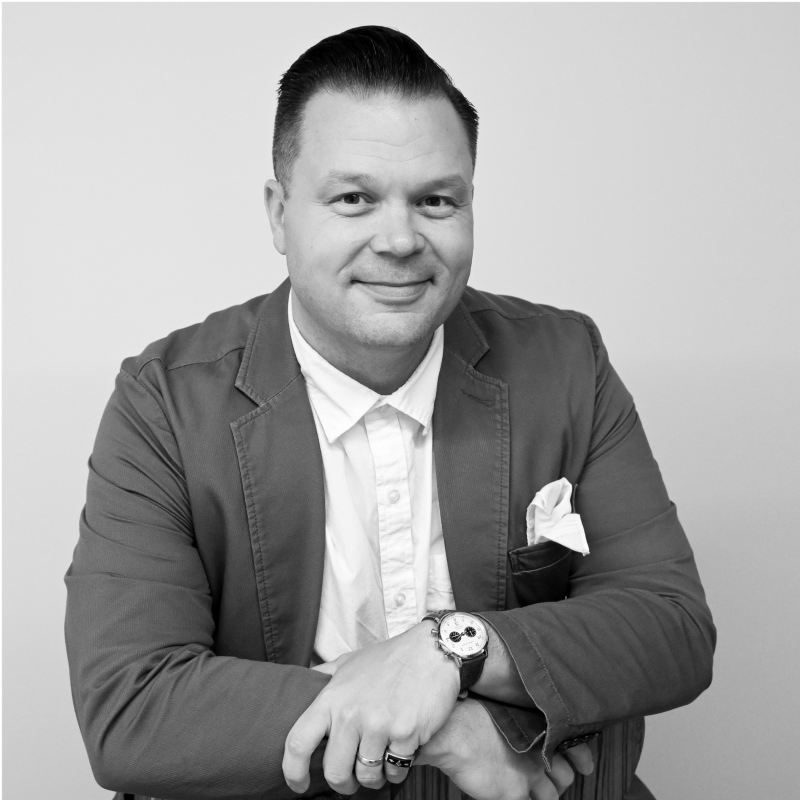
Rusty did a great job of being a level and objective voice on a team of designers. His work focuses first on "how it works" before considering "how it looks". This kind of focus is really important to any great UX designer. Rusty was thorough and thoughtful in design critique and review as well as proactive and prepared as employee.
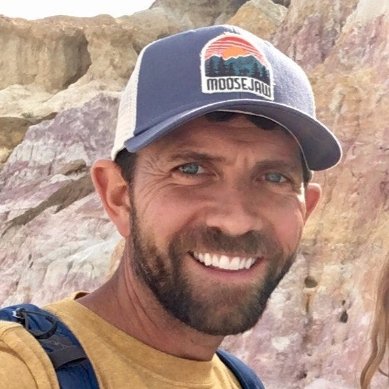
Rusty can be relied on to do great work on any project. He has both strong visual and interaction design skills–just a great UX guy. But there are a couple things that really set him apart:
1: He loves taking on the complex projects. Call him nuts, but I think he gets a kick out of figuring out all the ins and outs and then creating something that is as simple of a solution that is possible. Oh, and if you try to make it more complex, you better have a good argument.
2: Rusty gets it done–no complaints, no excuses. He also isn't looking for the glory. What motivates him is solving customer's problems with great design. And he does it project after project.
3: He totally rocks the mutton chops.
Rusty is just a good man who is so easy to get along with. He's a great partner for product managers.
It's great working with Rusty and working with him makes my job even more interesting. We have done several projects together, some of them pretty complex and I always enjoy the process of creating new features with him. There were several cases when Rusty would surprise me with great UX solutions that I would never think of. He is reliable and easy to communicate, which are very important factors when working remotely. Rusty is an outstanding UX designer and a very nice person to work with.
It was a pleasure to work with Rusty for many reasons. For one, he is extremely talented at his job and his high quality user experience designs make anything he touches look and work better. He is also an equally great guy to be around and someone that motivates you to want to do better at your own job. Rusty tackles any job, gets it done with quality, and always has a smile on his face.
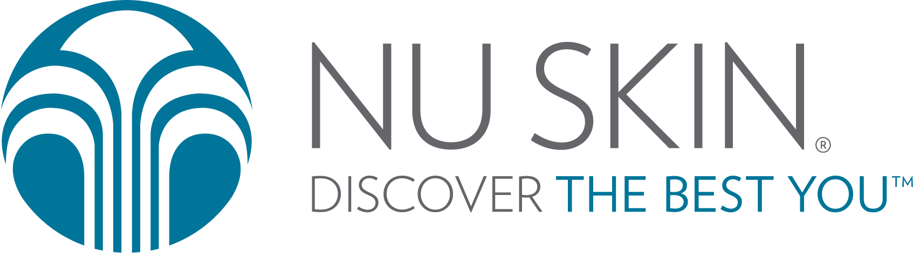
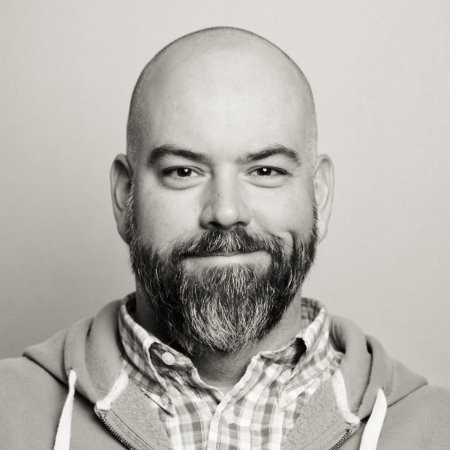
Rusty is an incredibly focused and talented individual. In the space of 18 months he took online user experience, a non-existent methodology in our company at the time, and made it a staple that multiple departments rely on.
His passion for improvement and innovation is unparalleled. Skills can easily be taught, but Rusty brings a loyalty and devotion to the table that is tough to find in people today. He meets obstacles head on and in a solution oriented manner that gets results.